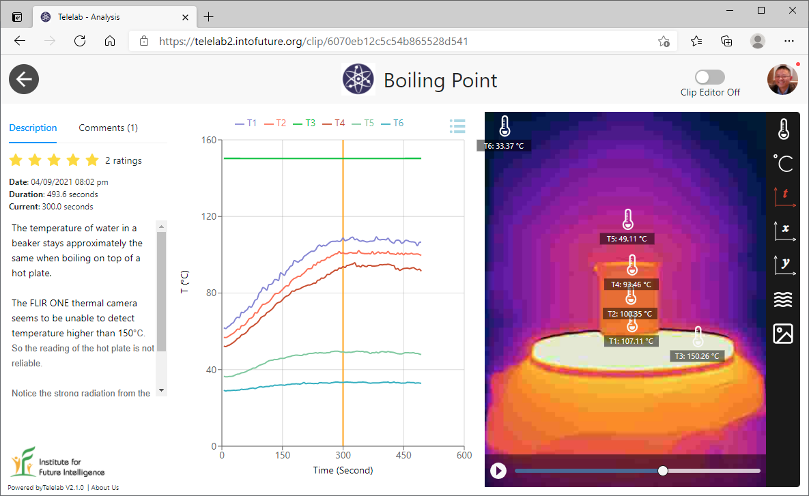
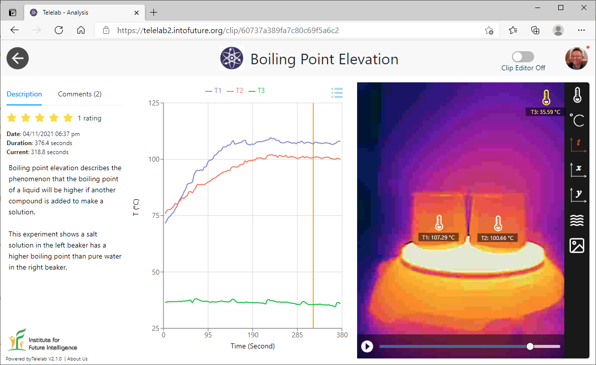
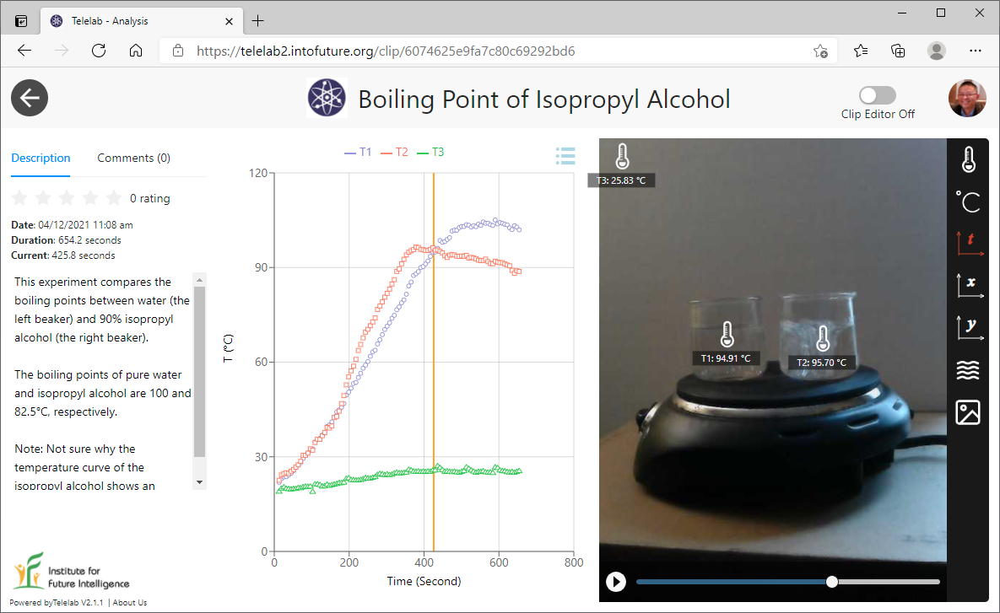

Visualizing boiling point
with thermal imaging
Three hot-plate experiments that reveal phase transitions through thermal-camera video — shared live through Telelab.
The boiling point of a substance is the temperature at which the vapor pressure of its liquid form equals the external pressure and the liquid transforms into a vapor. This process requires the input of latent heat to overcome the intermolecular forces in the liquid state, so the liquid stays at a constant temperature during the phase transition.
We published a few experiments about boiling point through Telelab. These experiments are easy to conduct anywhere, but users can conveniently explore them with the rich data we provided. Note that the FLIR ONE Pro thermal camera we used does not seem to be able to detect temperatures above 150°C in our case, despite the −20 to 400°C range in the specs.
Visualizing the boiling point of water
In the first experiment, we filled a beaker with water and put it on a hot plate. We then measured the surface temperatures of the beaker. It is interesting to note the gradient of the surface temperature — the closer to the hot plate, the hotter the surface. The middle of the surface wall of the beaker may best represent the temperature of water.

Visualizing boiling-point elevation
In the second experiment, we filled two identical beakers with the same amount of water and then added some salt to one of them. When heated on a hot plate, the phenomenon of boiling-point elevation was visualized.

Comparing boiling points of water and isopropyl alcohol
In the third experiment, we filled two identical beakers with the same amount of water and isopropyl alcohol (90%) and then heated them on a hot plate to observe the difference in their boiling points. Isopropyl alcohol (rubbing alcohol) is a highly volatile substance that evaporates much more quickly than water, especially when boiled.
